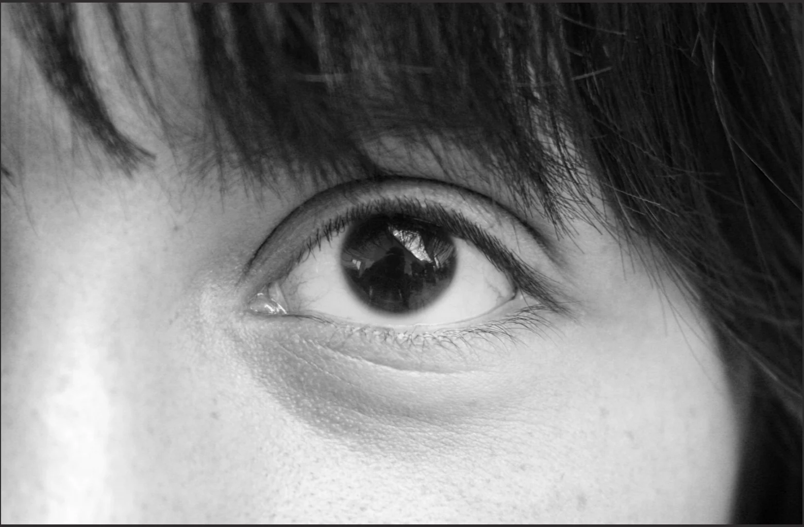
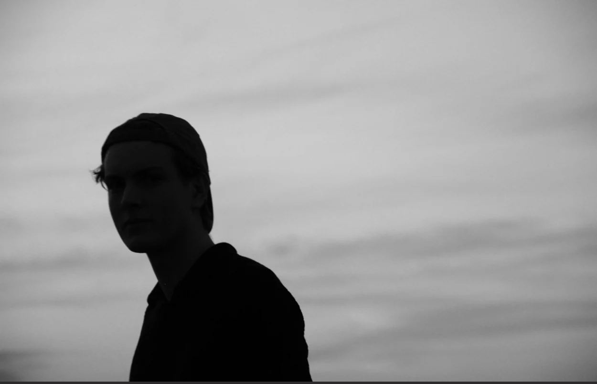
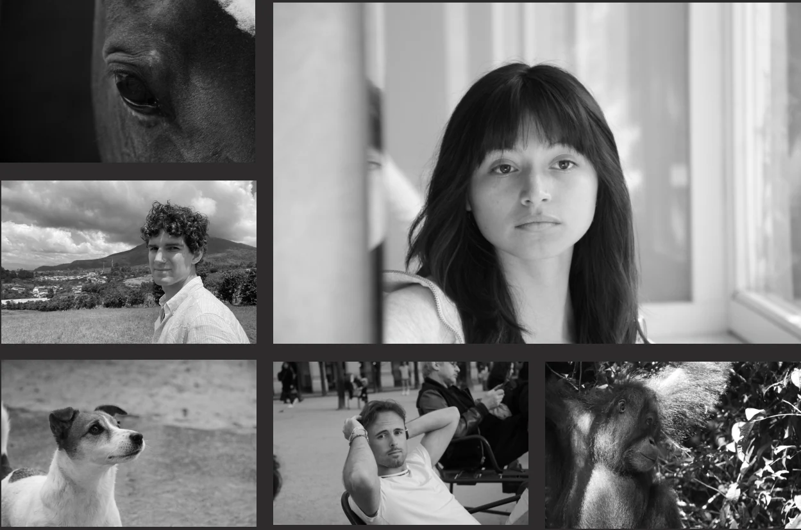

Regard remake
Série de photos au cours du temps.

Inspiré par le travail de Sophie Lalou dans Regards, je transmets à travers mes photos l’identité et la personnalité des sujets photographiés.
Les photos sont travaillées en noir et blanc pour former une unité à travers les différences de colorimétrie et d’ambiance. Les éléments de la photo prennent ainsi le dessus sur le bruit du fond.

